{kind=link}
Multiple lines of attack at high redshift: simulating line-intensity cross-correlations
Ishika Bangari (she/her), working with Dongwoo Chung (he/they)
Applications for SURP 2021 are no longer being accepted. Thank you to all who applied for SURP 2021 -- all applicants have now been notified on their selection decision.

Ishika Bangari (she/her), working with Dongwoo Chung (he/they)
Baria Khan (she/her), working with Jenna Freudenburg and Abby Crites

Nada El-Falou, working with Jenna Freudenburg and Mubdi Rahman
Sina Babaei Zadeh, working with Ted Mackereth, Lamiya Mowla (she/her), and Josh Speagle (he/him)
Alicia Savelli, working with Ted Mackereth and Josh Speagle (he/him)
Artem Davydov, working with Antoine Marchal and Cameron Van Eck
Luka Vujeva, working with Peter Martin and Antoine Marchal
Kanah Smith and Niharika Namulla, working with J. J. Zanazzi and Janosz Dewberry
Lisa Nasu-Yu, working with Abby Crites, Dongwoo Chung (he/they), and Jenna Freudenburg
Alexander Laroche, working with Daniel Gilman and Jo Bovy
Anatoly Zavyalov (he/him), working with Adam Hincks
Matthew Leung (he/him) and Qing Hao Xu, working with Dae-Sik Moon
Sky Bjel, working with Barth Netterfield
Ava Oveisi (she/her), working with Josh Speagle (he/him)
Zhiya Lou, working with Gwendolyn Eadie and Josh Speagle (he/him)
Mingxuan Teng, working with Gwendolyn Eadie and Josh Speagle (he/him)
Rosalind Liang (she/her), working with Shaojie Chen and Suresh Sivanandam
Juan Alfonzo, working with Kartheik Iyer
Rebecca Ceppas de Castro (she/her), working with Lamiya Mowla (she/her)
Daniella Morrone (she/they), working with Lamiya Mowla (she/her) and Kartheik Iyer
Leandro Rizk and Jiapeng Zhang, working with Cherry Ng (she/her)

Sacha Lévy, working with Cherry Ng (she/her) and Paul Scholz
Zara Zaman, working with Luke Pratley
Utkarsh Mali (he/him), working with Keir Rogers (he/him)
TonyLouis Fondzenyuy Verberi, working with Keir Rogers (he/him) and Renée Hlozek
Maxwell Fine (he/him), working with Cameron Van Eck and Bryan Gaensler (he/him)

The Summer Undergraduate Research Program (SURP) in astronomy and astrophysics at the University of Toronto is a unique experience for undergraduate students in astronomy, physics, or engineering to prepare for a career in scientific research.
The 16-week program, which runs annually from early May through mid August, aims to provide research opportunities with astronomers from the Canadian Institute for Theoretical Astrophysics, the David A. Dunlap Department of Astronomy & Astrophysics (DADDAA), and the Dunlap Institute for Astronomy & Astrophysics.
Throughout the program, students will have the opportunity to:
For summer 2021, SURP will run from May 3 through August 20, provide an estimated stipend of $9,595 for the 16-week period, and be held remotely due to COVID-19. The program will have all components listed above, and specific details will be provided at the start of the program.
Ishika Bangari (she/her), working with Dongwoo Chung (he/they)
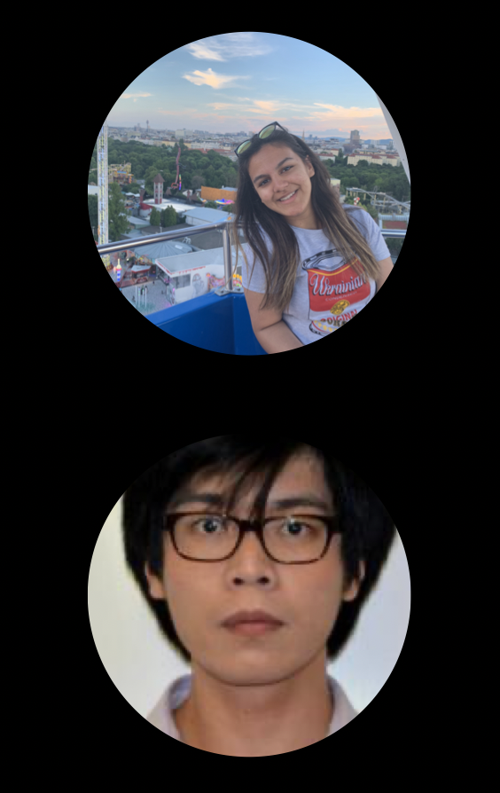 Line-intensity mapping (LIM) surveys in the next decade will produce observations of fluctuations in integrated line intensity across large cosmological volumes, targeting various radio and sub-millimetre lines that all trace matter and galaxies in different ways. One key way to maximise the value of LIM surveys will be through cross-correlations between (or even within) surveys, which should allow inference of more information with more confidence compared to analysing only auto-correlations for each target line. However, forecasting such cross-correlations requires self-consistent, physically motivated line-emission models that can be applied to large cosmological simulations. The project will build on existing simulation frameworks to explore potential LIM cross-correlation scenarios, with an eye on their viability for near- and far-future surveys. The student will gain skills related to analysis of numerical simulations, as well as understanding of high-redshift astrophysics and cosmology. Given the wide range of possibilities, details will change to match the student's exact interests.
Baria Khan (she/her), working with Jenna Freudenburg and Abby Crites
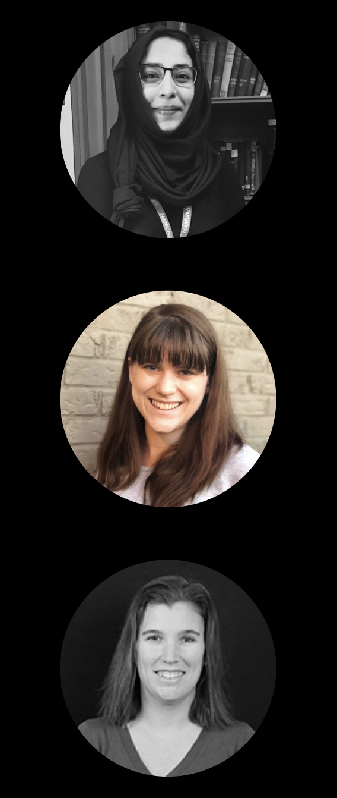
This project will focus on understanding the evolution of our universe across cosmic time, investigating how we can combine measurements from two upcoming instruments to disentangle different kinds of astrophysical signals from galaxies. Combining these measurements, spectra of Carbon Monoxide (CO) from galaxies and infrared images of galaxies, will help us understand the epoch of reionization, when starlight from young galaxies started playing an important role in the evolution of the universe, and the peak of star formation, when galaxies started to resemble the populations we see today.
TIME is an instrument being developed to study the faint objects in our universe using line intensity mapping (LIM). TIME will measure ionized carbon emission from redshift (z) of 5 to 9 to probe the evolution of our universe during the epoch of reionization. TIME will also measure low-redshift CO fluctuations and map molecular gas in the epoch of peak cosmic star formation from redshift 0.5 to 2. The Roman Space Telescope is an upcoming NASA observatory that will take infrared images of tens of millions of galaxies out to z ~= 2, which will overlap spatially with the CO foreground that TIME will observe.This project will look at how many galaxies we expect to see with TIME in each voxel of the lower redshift survey and determine how many of these Roman could detect with its legacy imaging survey. It will explore what we can learn about galaxy formation, large-scale structure, and cosmic evolution by combining these two measurements.
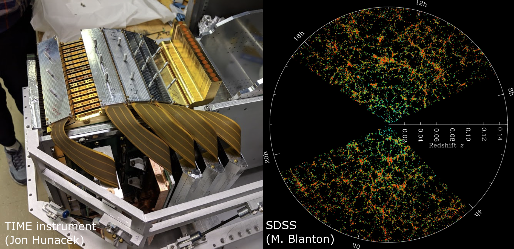
Nada El-Falou, working with Jenna Freudenburg and Mubdi Rahman
In this era of multi-wavelength, wide-field surveys, it's become a challenge to organize and visualize how these different initiatives are related to one another. In this project, we will develop a web-based (HTML/JS/CSS) interface to develop an optimal strategy for visualizing the celestial positions of the locations and properties of the gamut of astronomical surveys on-sky. The project will involve figuring out how to interface with existing information from surveys, through Python, and developing a pipeline to generate the web-based visuals.

Parasar Thulasiram, working with Xinyu Li
Fuzzy Dark Matter (FDM) is a newly proposed dark matter model consists of ultralight axions of mass 10-22 eV. They behave like Cold Dark Matter on large scales with significant change on scales below a few kpc (the de Broglie wavelength of FDM). The dynamics of FDM is described by a complex scalar field governing by the Schrodinger-Poisson equation. The wave nature of FDM leads to new interesting phenomena. For example, FDM halo has vortices almost everywhere with density fluctuation of order unity. At the centre of the FDM halo, a soliton core is formed and oscillate due to the interference between different eigenstates. The new phenomena of FDM can have observable effects on stellar dynamics, gravitational lensing and pulsar timing. In this project, the student will perform calculations of FDM model to understand its properties and observable signatures. The student can also use the SPoS code to simulate FDM evolutions. Potential topics to explore include the tidal disruption of FDM, lensing effects of FDM, cosmological evolution of FDM with baryons depending on the student's interests.
Sina Babaei Zadeh, working with Ted Mackereth, Lamiya Mowla (she/her), and Josh Speagle (he/him)
Galaxies form in the Universe via hierarchical assembly: smaller clumps conglomerate together to form ever larger structures and eventually the galaxies we observe at the present day. The specific way that galaxies assemble (i.e. fast or slow, early or late) likely impacts on the way they look today. For example, we believe that the Milky Way and other disc galaxies must not have many major merging events, since these might disturb the stars in their discs.
In this project, the student will construct the histories of galaxies from the EAGLE simulations of galaxy evolution. Since the simulations track galaxies from their birth up to the present day, they provide a unique way to study how galaxies assemble in a realistic universe. By studying how different histories lead to different populations of galaxies at the present day, the student will determine how well a galaxy’s assembly history can determine its final properties. This project will develop skills in data analysis using Python and the EAGLE SQL galaxy database and provide an introduction to cosmological simulations and observational constraints in the local universe.
Alicia Savelli (she/her), working with Ted Mackereth and Josh Speagle (he/him)
The Milky Way offers up solutions to the problem of galaxy formation and evolution on a star-by-star basis, allowing us to test models for galaxy evolution in our Galactic back-yard. In order to make these tests as useful as possible, however, we need to properly understand how representative of a ‘typical’ spiral galaxy the Milky Way actually is. Of course, this idea begs the question of what even constitutes a ‘typical’ galaxy? A lot of effort has been made in recent years to approach this problem observationally, by selecting galaxies in large surveys that have similar bulk properties to those we can measure for the Milky Way. However, very few studies have approached this question from the vantage point of simulations of galaxy formation.
In this project the student will use the EAGLE suite of cosmological simulations of galaxy formation to examine the question of what it means for a galaxy to be ‘typical’, and also to examine how we might improve our selection of ‘Milky Way Analogues’ in observational data sets. The project may also involve studying analogues of our near neighbour, the Andromeda galaxy (M31), in the simulations, contrasting them with the Milky Way analogues. The project will develop skills in data analysis using Python and the EAGLE SQL galaxy database and provide an introduction to cosmological simulations and observational constraints from the Milky Way for interested students.
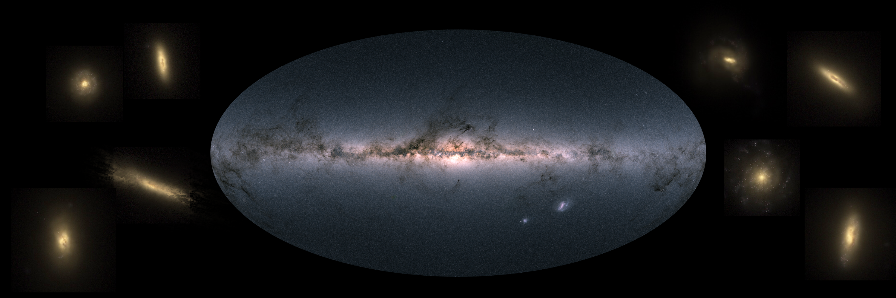
Artem Davydov, working with Antoine Marchal and Cameron Van Eck
Magnetic fields are present throughout the universe, including the interstellar medium (ISM) in our Galaxy. One of our best tools for studying ISM magnetism is radio polarization, particularly the Faraday rotation effect which causes the polarization of radio emission to be modified by the magnetic field. Faraday tomography is a method of analyzing radio polarization data that tries to characterize emission by the position on the sky and the strength of the Faraday rotation, creating complex pseudo-3D cubes of the polarized sky. Interpreting these cubes is a challenge, but the spectral line community have developed tools for their own data, which has a lot of similarities to Faraday tomography results.
This project will be to investigate the use of spectral line component fitting tools for Faraday tomography data, modifying the tools as necessary to work for polarization and testing them with low-frequency Faraday tomography data. Once successful, the focus will be split between producing a tool that can be used by the radio polarization community, and analyzing the results coming out of the tools. Over the course of the project the student will become familiar with radio polarization concepts, programming and version control, data exploration and visualization, and Galactic magnetism.
Luka Vujeva, working with Peter Martin and Antoine Marchal
It is believed that stars form by gravitational collapse of dense and cold structures located in molecular clouds. However, the process that leads to the formation of these over-densities is still unclear. Radiative condensation of the diffuse warm neutral medium (WNM) is a plausible mechanism for producing the cold neutral medium (CNM), and in turn the CNM, being denser, is thought to be a critical initial step leading the atomic-to-molecular (HI-to-H2) transition. Huge efforts have been made to understand the formation of molecular gas, but the step that led to the formation of the cold HI still remains unclear. Numerical simulations abound. Furthermore, a large amount of data has been collected over the last decade and so we now have access to arcmin spatial resolution observations to study the transition.
Among these data sets, the GHIGLS 21-cm line survey at 10' resolution covers over 1000 deg2 and gives us the possibility to look at different environments of the Galaxy. Some large areas of this have been studied at 1' resolution in the DHIGLS survey. The first goal of this admittedly open-ended project is to analyze the multiphase structure of intermediate latitude HI fields in these surveys. In particular, to get started the student(s) will focus their work on analyzing GHIGLS data on a specific region, e.g., the intermediate velocity clouds G86 or Draco, HI structures located at the disk halo interface that hint at and/or show the formation of CNM and/or molecular (H2) gas.
As a very first step specifically related to honing computing skills, the student(s) will have the opportunity to probe the phase transition in HI by making use of the ROHSA multi-Gaussian decomposition code. This step will familiarize them with handling archival HI spectral data stored in data cubes, extracting spectra, and manipulating spectra (integrals, moments, etc.), as well as visualization. It will also introduce them to the ROHSA optimization tool for inverse problem solving applied to astrophysical observations such as the 21-cm line.
The end result is an original assessment of the distribution of the gas among the thermal phases and their physical properties. Through this scientific investigation, the students will contribute to original research and publish results on some interesting astrophysical questions, while acquiring a wide range of skills, from new statistical tools (ROHSA) to popular programming languages (python, LATEX) and management tools (GitHub, Overleaf, Notion).
In later steps (the open-ended possibilities!), it will be possible to start a comparison with other tracers of the interstellar medium, such as the thermal emission by dust grains seen by the Herschel and Planck satellites (the latter including polarization). This opens up many interesting questions for inquiry, e.g., Does the thermal condensation shaping the neutral interstellar medium reveal any signature of a change in the properties of this dusty fluid (for example, an evolution of the dust emissivity)?
Based on similar projects undertaken by students last winter, last summer, and during this year, we have good evidence that such projects can be quite successful even under the restrictions imposed by COVID-19.
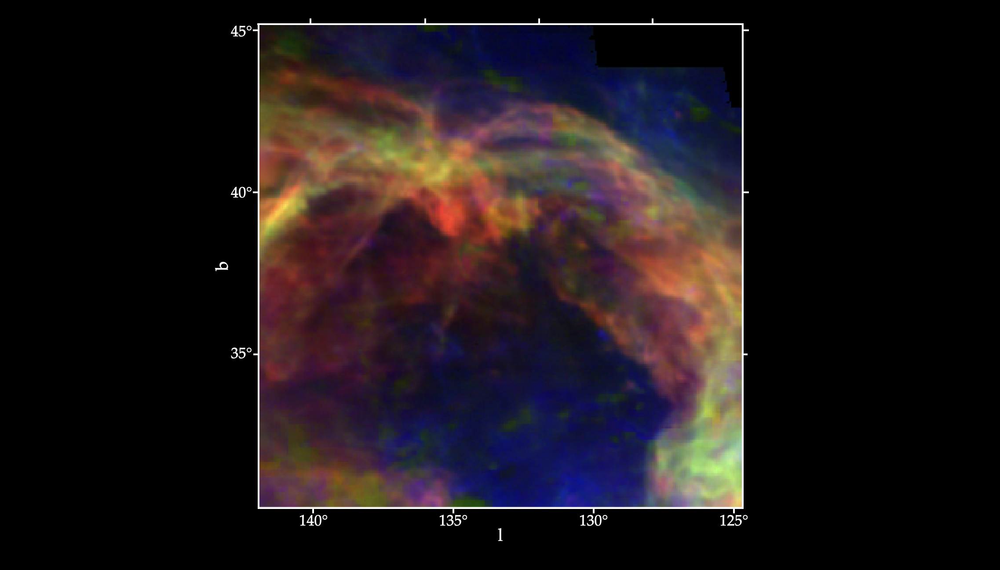
Kanah Smith and Niharika Namulla, working with J. J. Zanazzi and Janosz Dewberry
Originally the subject of science-fiction, astronomers have now detected several dozen “Tatooine planets,” or planets in orbit around two stars (which orbit one-another). In fact, astronomers have discovered so many Tatooine planets that their existence may constrain the past orbital history of the two stars. As the two stars orbit each other, the gravitational pull from one star on the other causes the gas within each star to “slosh,” which dissipates energy and causes the stars to move closer to one another, a process called “tidal circularization and migration.” For this project, the researcher will do simulations of planets orbiting two stars, while the stars are undergoing tidal circularization and migration. The researcher will then place unique constraints on the past history of the two orbiting stars, using the presence or absence of detected Tatooine planets.
Image credit: JPL/Caltech
Hayley Agler, working with Ray Carlberg
We will analyze super-computer simulations of star clusters and their tidal debris in cosmological simulations to understand the relationship between the stars and the dark matter. Time permitting we will link the simulation results to observations of stars in the Milky Way and Local Group.
Lisa Nasu-Yu, working with Abby Crites, Dongwoo Chung (he/they), and Jenna Freudenburg
This project focuses on understanding the history and evolution of our universe about 1 billion years after the big bang using a new instrument called TIME. TIME is an instrument being developed to study the faint objects in our universe using a technique called line intensity mapping (LIM). TIME will measure ionized carbon ([CII]) emission from redshift 5 to 9 to probe the evolution of our universe during the epoch of reionization to understand how first stars and galaxies formed and ionized the neutral hydrogen in our universe. TIME will also measure low-redshift carbon monoxide fluctuations and map molecular gas in the epoch of peak cosmic star formation from redshift 0.5 to 2. This project will focus on the TIME data analysis pipeline and developing tools to filter the data and remove atmospheric contamination to the data to assure robust scientific results.
Image credit: Jon Hunacek
Alexander Laroche, working with Daniel Gilman and Jo Bovy
Most of the mass in the Universe exists in the form of dark matter, an enigmatic substance with unknown particle properties that only appears to interact gravitationally with baryonic matter. Viable dark matter particle candidates span over thirty orders of magnitude in mass, ranging from supersymmetric particles at the GeV scale to ultra-light bosons with particle masses of 10-22 eV. In theories with ultra-light dark matter, the de Broglie wavelength of the particle is comparable to the size of a galaxy, so quantum mechanical phenomena manifest on galactic length scales. Collapsed dark matter structures that form in this scenario have dense central cores, and exhibit wave-like density fluctuations on galactic scales of ~1kpc.
Gravitational lensing, or the deflection of light by gravitational fields, provides a unique and elegant means with which to probe dark matter structure in the Universe. In particular, in strong gravitational lenses the deflection by a foreground galaxy and its associated dark matter is so extreme that four highly magnified images of a single background source appear. The brightness of these images is extremely sensitive to small-scale dark matter structure between the observer and the source, and can therefore reveal the presence of the density fluctuations predicted by ultra-light dark matter theories. The student's role in this project will be to explore the application of strong gravitational lensing to constrain theories of ultra-light dark matter. This can involve theoretical work to compute the density profiles of the dark matter structures that affect lensing data, or computational investigation of the strong lensing effects of ultra-light dark matter.
Image credit: ESA/Hubble, NASA, Suyu et al.
Anatoly Zavyalov (he/him), working with Adam Hincks
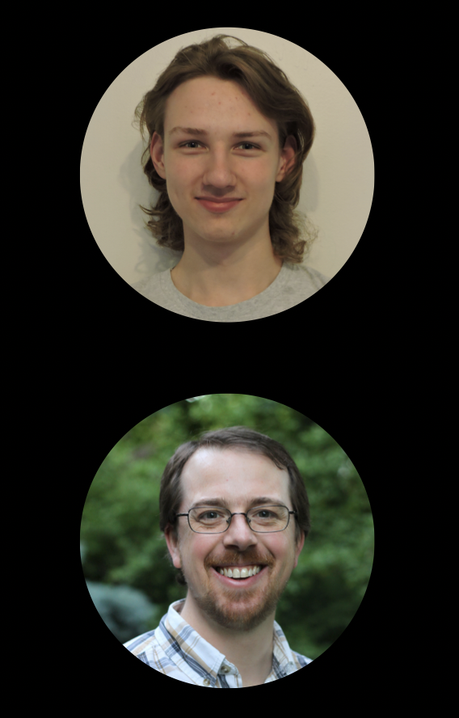
Upcoming cosmology experiments require lots of innovative software to coordinate observations, manage data collection and process and understand the data. The Simons Observatory (SO) will be a multi-telescope observatory in Chile for creating large and very sensitive maps of the cosmic microwave background to probe for inflation, measure the total mass of the three neutrino species, study the growth of structure, and much more. The Hydrogen Intensity and Real-Time Analysis eXperiment (HIRAX) will be an array of 1024 six-metre radio dishes in South Africa that will use intensity mapping to make huge, 3D maps of the universe between z = 0.8 and 2.5 in order to study dark energy and characterise pulsars and fast radio bursts. Each of SO and HIRAX will start being deployed in 2021.
There are various opportunities for summer research to contribute to the development of software for collecting, processing and understanding the data on either SO or HIRAX. The project can be tailored based on the applicant’s interests coupled with the needs of the experiment and will involve coding, typically in python and perhaps C++. Programming experience is helpful, but the position also offers the opportunity to develop these software skills, which are increasingly important for astrophysics research.
More information on SO and HIRAX is linked from my webpage: http://www.astro.utoronto.ca/~ahincks/
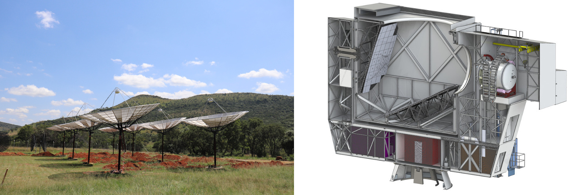
Image credit: HIRAX (left), S. Dicker (right)
Matthew Leung (he/him) and Qing Hao Xu, working with Dae-Sik Moon
Supernovae studies have been central in moving modern astronomy forward, which is best described as “seeding the elements and measuring the Universe.” Young supernovae that are detected within a few hours from the explosion are of particular interest and importance since they have crucial information for how supernovae explode. They are also prime targets for neutrino and/or gravitational wave detection. Using the KMTNet facility, which provides 24-hour continuous sky coverage with three wide-field telescopes in southern hemisphere, we are now detecting elusive young supernovae as well as unusual optical transients previously unidentified. This project is to study those young supernovae and optical transients to understand their nature.
Sky Bjel (she/her), working with Barth Netterfield
The Balloon-borne Astrophysics group has opportunities for a variety of undergraduate positions in the construction and integration of the SPIDER and SuperBIT balloon-borne telescopes. SPIDER is a mm-wave telescope designed to search for the signature of gravitational waves from the epoch of cosmological inflation in the early Universe. It will make a 3 week flight from Antarctica in December 2021. SuperBIT is a wide-field visible/near UV diffraction-limited imaging telescope designed to measure the distribution of dark matter around over 100 massive galaxy clusters through both strong and weak lensing. It will be integrated over the summer of 2021 in preparation for a 100 day flight in 2022.
Projects include mechanical and electronic engineering, flight and ground software (C, C++, Rust, Python), construction and debugging, data analysis, and flight observation planning. Experience in any of these areas is a plus, but only interest is required.
There are many opportunities on either telescope, and the project will be adjusted to fit the interests of the applicant. For more information about our group, see https://sites.physics.utoronto.ca/barthnetterfield
Ava Oveisi (she/her), working with Josh Speagle (he/him)
While interstellar dust only comprises ~1% of the interstellar medium by mass, it scatters >30% of all light. It therefore both is a pervasive systematic in many astronomical observations and also a powerful tracer of Galactic structure. By modeling the integrated effects of intervening dust over millions of visible stars at a wide range of distances, we can construct 3-D dust maps that can be useful for both of these purposes. This project will explore developing and applying new statistical and computational techniques to construct the next generation of 3-D dust maps using both simulated and/or real data. The results will be incorporated into ongoing projects to construct 3-D dust maps using >1 billion stars.
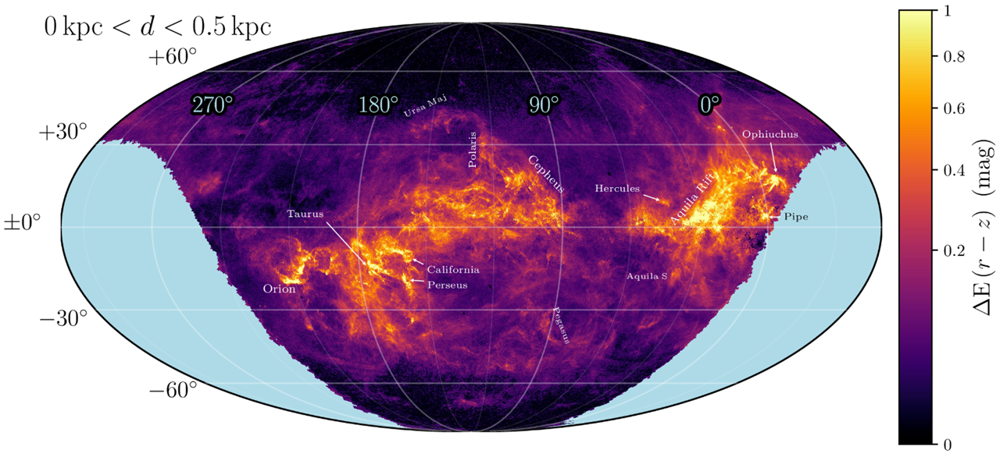
Milica Ivetic, working with Jeremy Webb
Stars form in clustered environments that either break up soon after formation or continue to evolve as star clusters. The natural end product of a star cluster’s evolution is complete dissolution, as internal and external processes work to continuously strip stars from the cluster. Once a star escapes its host cluster, it populates one of two thin tidal tails that precede and succeed the cluster along its orbit. Once the cluster itself dissolves, all that is left is a stellar stream (see Figure 1). Tails and streams have been shown to be quite sensitive to the evolution and present day structure of their host galaxy, such that significant work goes into modelling and observationally searching for tails and steams. Hence students interested in either observational or theoretical astronomy should consider this project. Potential observational work includes utilizing the GAIA database to search for tidal streams or measure the properties of known streams. Potential theoretical projects include modelling how dwarf galaxies affect tails and streams, modelling stream-stream interactions to compare with GAIA data, and estimating the distribution of exoplanetary systems along tails and streams.
Zhiya Lou, working with Gwendolyn Eadie and Josh Speagle (he/him)
Choosing between different classes of models to describe a given dataset is a common problem in both astronomy and statistics. We will explore the use of several Monte Carlo methods to investigate the use of "Bayes Factors" for model selection and explore how they perform across a suite of simulated globular cluster data.
Mingxuan Teng, working with Gwendolyn Eadie and Josh Speagle (he/him)
Machine learning (ML) methods can generate predictions to a wide variety of data, but these predictions do not come with "reliability" flags that tell you whether you should trust them or not. These can be especially important when ML methods are applied to new datasets outside of domains where they have been trained. We will investigate whether we can use of unsupervised dimensionality reduction and clustering algorithms to develop workflows to identify these types of cases using a suite of benchmark ML datasets and, if time permits, some astronomy-focused ones.
Rosalind Liang (she/her), working with Shaojie Chen and Suresh Sivanandam
We have designed the DMD-MOS fed by the 16-inch telescope with F/18 beam in the seeing-limited resolution of 1.5”, including both spectroscopic and imaging modes within one instrument, as a prototype. As part of this project, students will be involved in complex DMD-MOS investigation (understand the science requirements, calculate the parameters, et al.), and system design (join into the design progress from the sketch, and prepare for the delivery design to manufacture.) This process will superbly help students deeply understand the principle of the complex spectrographs. Based on this, students will work on the program and coding for the spectral data reduction. At the same time, the students will join in the real spectrograph alignment and calibration with the equipment in our advanced optical lab. They will have chance to gain the experience of installing the spectrograph onto the telescope and observing spectral images.
The students who have the engineering or optics related background will be better to fit this position.
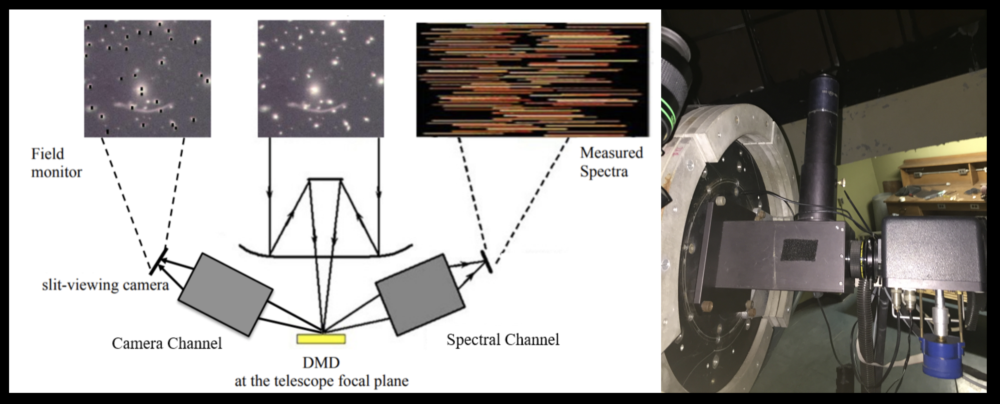
Juan Alfonzo, working with Kartheik Iyer
On large (galaxy-wide) scales, the appearance (morphology) of galaxies is correlated with their past star formation activity. On the smallest scales within galaxies, the local star formation rate is correlated with the local gas density (also referred to as the Kennicutt-Schmidt law). In this project, students will study the connection between the factors regulating star formation in galaxies on different spatial and temporal scales, and connect different morphological factors of galaxies (such as bars, bulges and spiral arms) with their star formation histories, identifying features that correspond to star formation on different timescales. Depending on the students' interest, this can be done using machine learning methods as well, although some familiarity with programming in python is recommended for that.
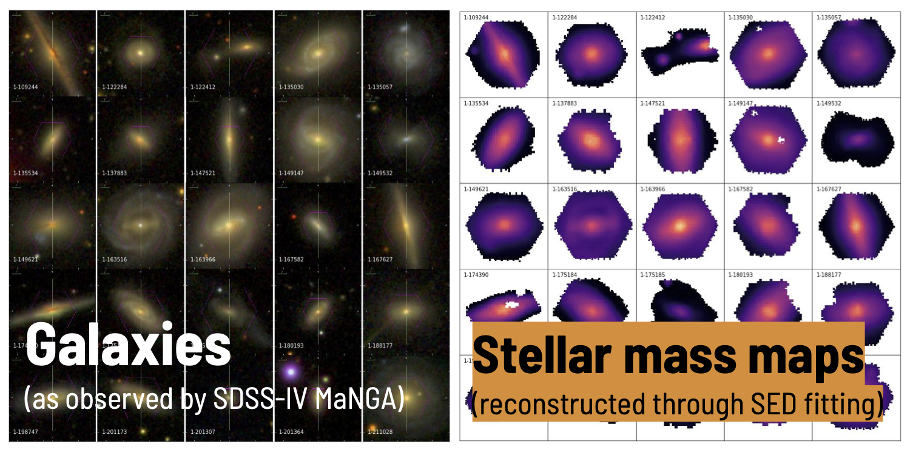
Rebecca Ceppas de Castro (she/her), working with Lamiya Mowla (she/her)
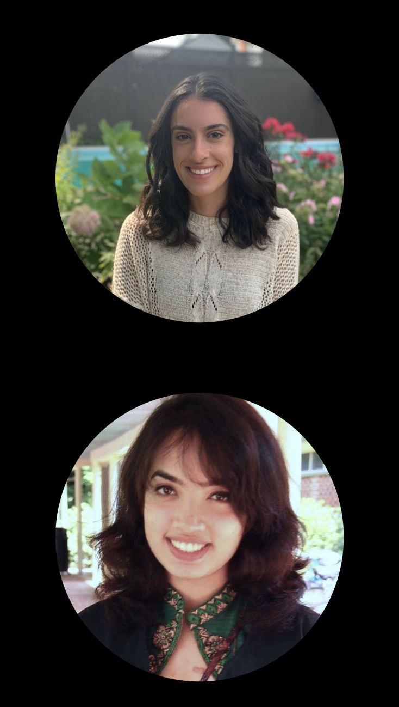
The formation and evolution of galaxies are impossible to comprehend using observations alone, making today's cosmological hydrodynamical simulations with multi-scale models of physical processes a critical deciphering tool. However, despite the success of cosmological hydrodynamical simulations largely matching observed galaxy scaling relations, they have yet to reproduce the size evolution of galaxies as observed by the thousands of orbits of extragalactic imaging by the Hubble Space Telescope (HST); the sizes of galaxies are not consistent with observations, nor across different simulations. Is this because the simulations are making galaxies with the wrong sizes? Or is it because they have not yet incorporated the effect of the major culprit that is distorting our observations of galaxies - dust? We can answer this question by applying the effect of dust on simulation outputs to create realistic observed images of galaxies. In this project, we will use state-of-the-art dust radiative transfer package Powderday to create mock "observed" HST images of galaxies from different simulations (SIMBA, IllustrisTNG, EAGLE, and FIRE). The student will thus make apple-to-apple comparisons between the sizes of galaxies in different simulations to the observed sizes of galaxies to settle the question - are the sizes of galaxies in simulations wrong? We will also create mock images for the upcoming James Webb Space Telescope from all the simulations which we will release in a public database. The student will learn to code in python, do statistical analysis, learn about cosmological hydrodynamical simulations, observations with HST and JWST, and will also help with creating the public database.
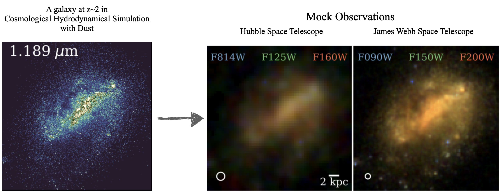
Daniella Morrone (she/they), working with Lamiya Mowla (she/her) and Kartheik Iyer
Galaxy morphologies contain information vital to decoding their evolution. In this project a student will work on comparing the light- and mass-weighted morphologies for a sample of distant galaxies observed with some of the Hubble space telescope's deepest imaging (the Hubble eXtreme Deep Field) to those of galaxies from cutting-edge cosmological simulations to quantify their similarities and differences. Using this analysis in conjunction with the star formation histories of these galaxies, the student will aim to reaffirm what current simulations get right about galaxy evolution, and discover what is still missing in our picture.
Image credit: NASA; ESA; G. Illingworth, D. Magee, and P. Oesch, University of California, Santa Cruz; R. Bouwens, Leiden University; and the HUDF09 Team).
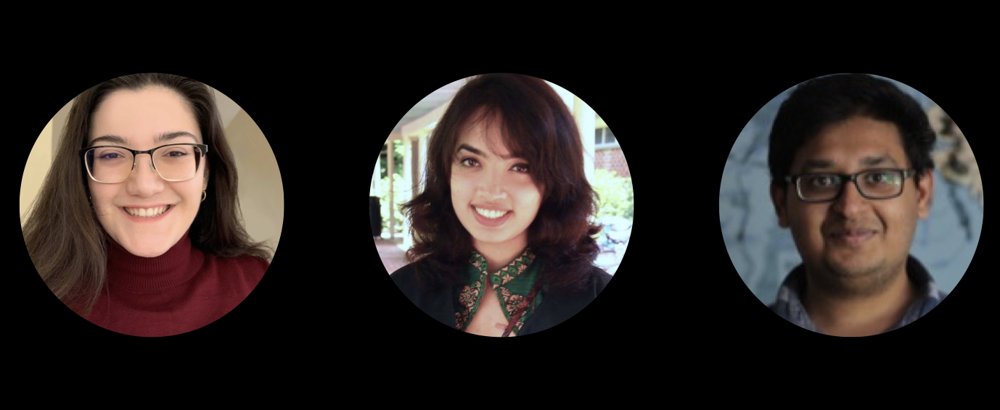
Leandro Rizk and Jiapeng Zhang, working with Cherry Ng (she/her)
The search for technosignatures (or the Search for Extraterrestrial Intelligence - SETI) is one of the most profound questions in astronomy. In the era of big data astronomy, SETI work also represents a major data processing challenge that is drawing heavily on the advancement of machine learning algorithms and signal processing techniques. The Breakthrough Listen Initiative is currently conducting the world’s most comprehensive SETI search on the MeerKAT telescope in South Africa, ultimately surveying 1 million nearby stars for artificial radio emission. A similar program is being commissioned on the Very Large Array (VLA) in the US. We are recruiting student(s) to contribute to these two main SETI search projects, specifically regarding data processing and search algorithm optimization. Familiarity with high performance computing/programming would be an asset. The student(s) would also be collaborating closely with the intern cohort of BL@Scale at the UC Berkeley SETI Research Center, as well as other team members on the MeerKAT and the VLA projects.
Sacha Lévy, working with Cherry Ng (she/her) and Paul Scholz
The Canadian Hydrogen Intensity Mapping Experiment (CHIME) is a revolutionary new radio telescope, recently completed outside Penticton, BC. In the first two years of operation, CHIME is discovering many new Fast Radio Bursts (FRBs), and this discovery rate is expected to keep course if not further increase. CHIME has brought about a new landscape in the FRB field; for the first time we will be able to study FRB as a population. In order to do that, all these interesting detections will need to be systematically followed up, verified and characterized in an automated manner. In parallel, CHIME is monitoring over 500 known pulsars with an unprecedentedly high cadence. This is a valuable data set for studying temporal variations in pulsars, such as nulling, mode changing and giant pulse, which could contribute to a better understand of the emission mechanism of neutron stars.
There are many opportunities and potential projects using CHIME FRB/Pulsar data, including software and signal processing pipelines, data analysis and visualization, as well as transient astrophysics. The project can be adjusted to fit the interest and skill set of the applicant. As part of CHIME, students will also experience collaborative research environment through weekly interactions with members from other institutions. Students interested in radio signal processing are encouraged to apply. Familiarity with programming would be an asset.
Image credit: Andre Renard, Dunlap Institute
Utkarsh Mali (he/him), working with Keir Rogers (he/him)
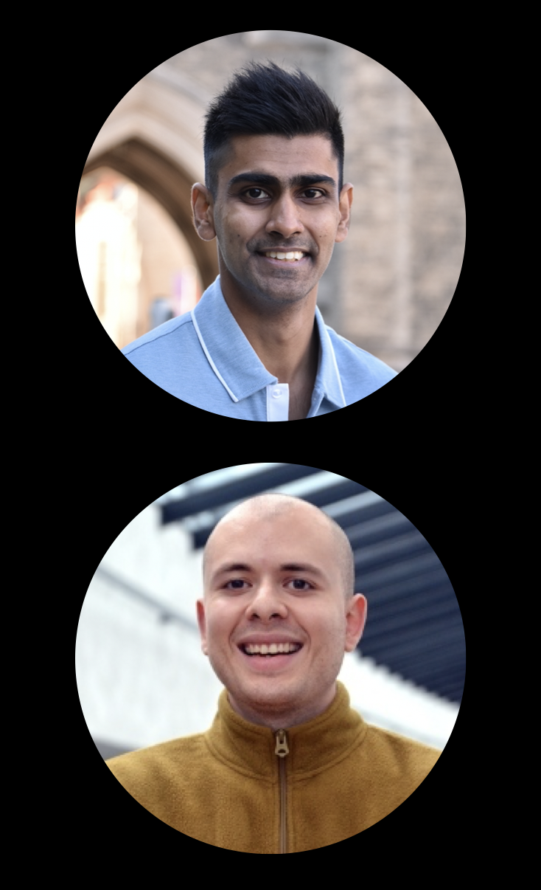
The recent detection of gravitational waves (GWs) was a stunning confirmation of Einstein’s general theory of relativity; the first co-detection of electromagnetic radiation can shed light on the nature of the catastrophic events that spawn GWs. This means simulating “kilonova” light-curves and carefully fitting them to data. But, these simulations are prohibitively computationally expensive. In this project, the student researcher will develop a machine learning (ML) alternative to make the analysis possible. Depending on the interests of the student, they can (i) investigate the most effective ML algorithms (e.g., Gaussian processes, Bayesian neural networks); (ii) make forecasts for the constraining power of future observations; (iii) use the method to analyse current light-curve observations; or any combination of the above.
The project will involve coding in Python and the use of popular scientific machine learning packages (e.g., scikit-learn, GPy, Tensorflow). The student will develop the full range of skills required for the data-focussed astrophysicist, in scientific coding, the use of machine learning packages and the analysis of astronomical data and simulations; with the focus matched to the student’s interests.
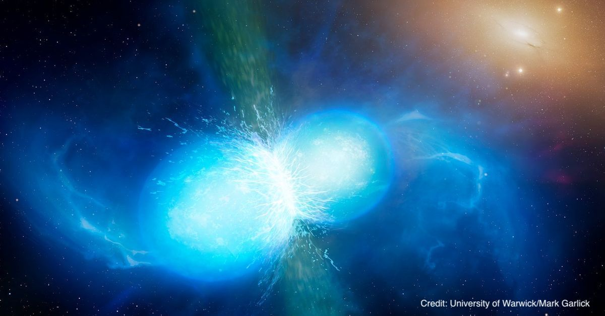
TonyLouis Fondzenyuy Verberi, working with Keir Rogers (he/him) and Renée Hlozek
The origin of the Universe and the physical nature of most of its contents remain uncertain. However, ongoing observations of the microwave-frequency radiation in the sky can shed light. This is because this radiation (the cosmic microwave background) is the “afterglow” of the Big Bang. The patterns in this light encode information about how the Universe formed (testing models of cosmic “inflation”) and about the masses of sub-atomic particles called neutrinos that are formed in the early Universe.
The challenge is that this primordial signal is obscured by microwave light from the Milky Way. In this project, the student will apply, develop and improve methods for extracting the primordial signal from noisy, contaminated data. This will require testing on sophisticated cosmological simulations of the microwave sky and, further, the student can apply their work to new, high-resolution observations from the Atacama Cosmology Telescope combined with satellite data from the Planck mission. The project will develop skills in scientific Python coding, (wavelet) signal processing and the analysis of cosmological simulations and data.
Maxwell Fine (he/him), working with Cameron Van Eck and Bryan Gaensler (he/him)
Magnetic fields are present throughout the universe, including the interstellar medium in galaxies. One of our best tools for studying ISM magnetism is radio polarization, particularly the Faraday rotation effect which causes the polarization of radio emission to be modified by the magnetic field. Radio polarization and Faraday rotation surveys provide a valuable resource for studies of magnetic fields in the Milky Way and other galaxies. In the next few years large radio surveys will dramatically increase the amount of Faraday rotation data we have, from the few tens of thousands of measurements we have now to over a million, dramatically increasing what we can learn scientifically from these measurements. But all of these scientific discoveries using these data will rely on the measurements having trustworthy error bars. This project will focus on testing and refining error analysis in data pipelines for polarization surveys, with the goal of ensuring that all the error bars are as accurate as we can make them. This will involve a mixture of real data and simulations, and will involve testing on data from the specific surveys in question as well as trying to generalize to any radio polarization data. Over the course of this project the student will gain knowledge and skills in radio data processing, scientific programming in Python, statistics and error analysis, and polarimetry.
Nicole Gromek, working with Jennifer West
Supernova remnants, debris clouds remaining after a stellar explosion, are some of the most extreme environments in the universe. They are important laboratories for understanding cosmic ray acceleration and the role of magnetic fields in the universe. High energy cosmic rays embedded in a magnetic field will emit synchrotron radiation, which dominates at radio wavelengths. This radiation is also polarized, and by studying the polarization we can begin to unravel the magnetic field geometry. In this project the student will analyze supernova remnant radio observations from the Low-Frequency Array (LOFAR) radio telescope.
Image credit: Jennifer West, using GALEX and LOFAR data.

Emma Jarvis (she/her), working with Almog Yalinewich
Massive stars live fast, die young and leave a beautiful transient behind called a supernova explosion. However, despite decades of research the explosion mechanism is not well understood. The first computer simulations of supernova explosions predicted that instead of exploding, the star would collapse under its own self gravity and form a black hole, and even today, different computer codes predict different outcomes for the same kind of progenitor star. In this project we will tackle this issue using a novel approach, combining analytic and computational tools. The successful candidate will help run simulation and analyse their data, and so some experience in python and c++ will be necessary. Prior knowledge of hydrodynamics and stellar structure is preferred, but not required.
{kind=link}
{kind=link}
{kind=link}
{kind=link}
{kind=link}
{kind=link}
{kind=link}
{kind=link}
{kind=link}
{kind=link}
{kind=link}
{kind=link}
{kind=link}
{kind=link}
{kind=link}
{kind=link}
{kind=link}
{kind=link}
{kind=link}
{kind=link}
{kind=link}